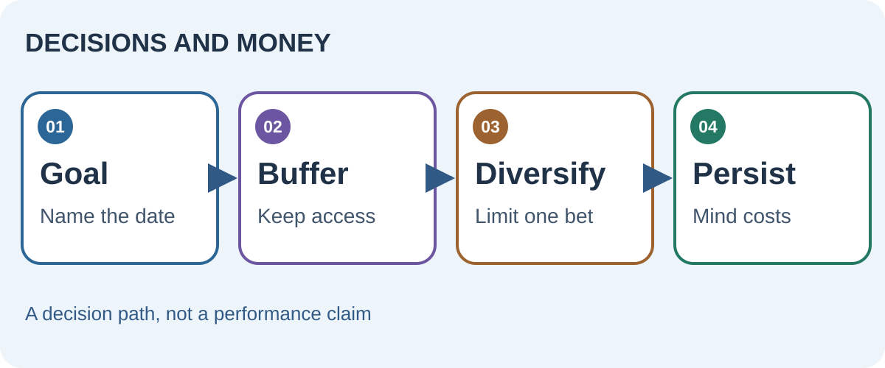

Match risk to the date you need the money
Compounding describes growth on past growth; it is not a promise of smooth returns. A short-term payment due next year cannot rely on the same volatility tolerance as a distant goal. Investor.gov explains that asset allocation depends on time horizon and risk tolerance. Liquidity matters because a forced sale can interrupt even a sensible long-term plan.
Berkshire Hathaway’s shareholder letters are useful primary material for Buffett’s long-horizon business thinking. They are observations and opinions from a particular investor, not an allocation template for every reader.


Protect the ability to continue
Diversification reduces dependence on one asset or company, though it cannot remove market risk. Fees and taxes compound in the opposite direction. Decide what loss would force you to abandon a plan, then keep an appropriate cash buffer and avoid concentrated exposures you cannot withstand. Behavior matters because panic, envy and overconfidence can turn temporary volatility into permanent loss.
One saver needs tuition money in 18 months; another is investing for a goal 20 years away. The first prioritizes reliable access to a known amount. The second can consider a diversified long-term allocation, after accounting for emergency reserves and personal risk tolerance.
Make the philosophy operational
Write down the purpose of each pool of money, the date it may be needed, what could go wrong, and when you will rebalance or reconsider. Review changes in circumstances rather than reacting to every headline. Personal philosophies such as patience or “enough” are useful only when they translate into a plan you can follow under stress.
Read the original sources
- SEC Investor.gov: asset allocation and diversificationTime horizon, risk tolerance and diversification basics.
- Berkshire Hathaway shareholder lettersBuffett’s original annual letters; read views in their historical context.